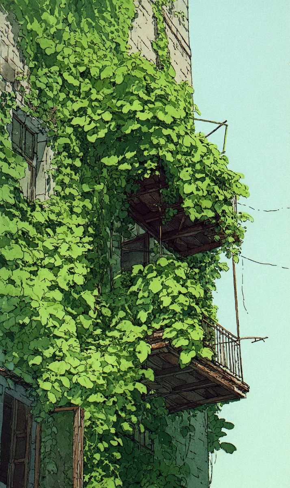

건물 외벽을 타고 올라간 담쟁이넝쿨이 발코니를 완전히 삼켜버린 것을 발견한 건 금요일 오후였다. 이하린은 사무실 창문 너머로 그 광경을 멍하니 바라보았다. 콘크리트 위에 초록빛 물결이 넘실거리는 모습이 마치 건물이 숨을 쉬는 것 같았다.
[It was Friday afternoon when she noticed the ivy climbing the outer wall had completely swallowed the balcony. Lee Harin stared blankly at the sight through the office window. The green waves rippling over concrete made it look as though the building itself were breathing.]
“하린아, 또 밖만 보고 있어?”
[”Harin, staring outside again?”]
오수빈이 커피 두 잔을 들고 다가왔다. 하린은 고개도 돌리지 않고 창문을 가리켰다.
[Oh Subin approached with two cups of coffee. Without turning her head, Harin pointed at the window.]
“저거 봐. 작년까지만 해도 벽돌이 다 보였는데, 이제 건물이 사라지고 있어.”
[”Look at that. Until last year you could see all the bricks, but now the building is disappearing.”]
수빈이 창가로 다가와 눈을 가늘게 떴다. 녹색 잎사귀들이 녹슨 난간을 감싸고, 금이 간 벽 틈새로 뿌리를 내리고, 닫힌 창문 위로 손가락처럼 뻗어 있었다.
[Subin walked to the window and squinted. Green leaves wrapped around rusted railings, roots pushed into cracked wall crevices, and tendrils stretched like fingers over closed windows.]
“무섭지 않아? 저 넝쿨이 결국 건물을 무너뜨릴 수도 있잖아.”
[”Doesn’t it scare you? Those vines could eventually bring the building down.”]
하린은 웃었다. “무너뜨리는 게 아니라 되찾는 거지.”
[Harin laughed. “It’s not bringing it down. It’s taking it back.”]
그날 저녁, 하린은 퇴근길에 일부러 그 건물 앞을 지나갔다. 가까이서 보니 넝쿨 사이로 작은 생태계가 숨어 있었다. 무당벌레가 잎 위를 기어 다니고, 참새 한 마리가 줄기 틈에 둥지를 틀고 있었다. 콘크리트와 철근으로 이루어진 도시 한복판에서, 자연은 조용히 자기 자리를 만들어가고 있었다.
[That evening, Harin deliberately walked past the building on her way home. Up close, a small ecosystem hid among the vines. Ladybugs crawled across leaves, and a sparrow had built its nest between the stems. In the middle of a city made of concrete and steel, nature was quietly carving out its own place.]
토요일 아침, 하린은 수빈에게 메시지를 보냈다.
[Saturday morning, Harin sent Subin a message.]
“우리 오늘 산 갈래?”
[”Want to go to the mountains today?”]
“갑자기? 왜?”
[”Suddenly? Why?”]
“어제 그 넝쿨 보고 나니까, 나도 좀 자연 속에 있고 싶어졌어.”
[”After seeing those vines yesterday, I want to be in nature too.”]
두 시간 뒤, 둘은 북한산 초입에 서 있었다. 아직 아침 공기가 차가웠지만, 발밑의 흙에서는 따뜻한 기운이 올라왔다. 산길을 따라 걷자, 도시에서는 들을 수 없었던 소리가 귀를 채웠다. 바람이 소나무 사이를 지나는 소리, 계곡 어딘가에서 흘러내리는 물소리, 이름 모를 새의 노래.
[Two hours later, they stood at the entrance of Bukhansan. The morning air was still cold, but warmth rose from the earth beneath their feet. As they walked along the mountain path, sounds they could never hear in the city filled their ears. Wind passing through pine trees, water flowing somewhere in a valley, the song of birds whose names they didn’t know.]
수빈이 깊게 숨을 들이마시며 말했다. “이런 게 진짜 충전이다.”
[Subin took a deep breath and said, “This is what real recharging feels like.”]
하린은 고개를 끄덕였다. 이끼 낀 바위 위에 앉아 계곡을 내려다보며, 일주일 동안 쌓인 피로가 어깨에서 녹아내리는 것을 느꼈다. 모니터 앞에서 보낸 다섯 날의 무게가 산바람 한 줄기에 흩어졌다.
[Harin nodded. Sitting on a moss-covered rock looking down at the valley, she felt the fatigue of the whole week melting off her shoulders. The weight of five days spent in front of a monitor scattered with a single mountain breeze.]
“수빈아, 나 진심으로 하는 말인데.”
[”Subin, I’m being completely serious.”]
“뭔데?”
[”About what?”]
“인간은 일주일에 나흘만 일하도록 설계된 존재야. 나머지 사흘은 이렇게 살아야 해. 흙 밟고, 바람 맞고, 새소리 듣고.”
[”Humans were designed to work only four days a week. The other three days, we should live like this. Stepping on dirt, feeling the wind, listening to birdsong.”]
수빈이 웃음을 터뜨렸다. “그건 설계가 아니라 소망이지.”
[Subin burst out laughing. “That’s not design, that’s wishful thinking.”]
“소망도 자주 말하면 현실이 돼.” 하린이 하늘을 올려다보았다. 나뭇잎 사이로 쏟아지는 햇살이 얼굴 위에 초록빛 그림자를 그렸다. “저 건물의 넝쿨처럼, 천천히, 하지만 확실하게.”
[”If you say a wish often enough, it becomes reality.” Harin looked up at the sky. Sunlight pouring through the leaves painted green shadows on her face. “Like the vines on that building. Slowly, but surely.”]
수빈은 아무 말 없이 옆에 누웠다. 두 사람 위로 바람이 지나갔다. 도시는 저 멀리 회색빛으로 웅크리고 있었고, 여기 산 위에서는 모든 것이 초록이었다.
[Subin lay down beside her without a word. Wind passed over the two of them. The city crouched in gray far away, and up here on the mountain, everything was green.]
주말은 자연이 인간에게 보내는 편지 같은 것이라고 하린은 생각했다. 매주 찾아오는 그 편지를 읽으려면, 최소한 사흘은 필요하다.
[Weekends are like letters nature sends to humans, Harin thought. To properly read those letters that arrive each week, you need at least three days.]
나흘만 일하자. 나머지는 살자.
[Let’s work only four days. The rest, let’s live.]